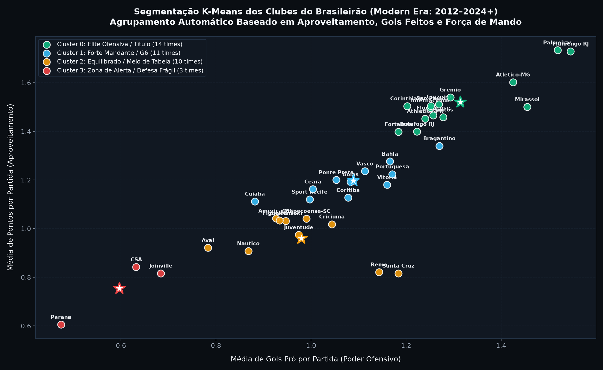

1. Regra Fixa vs. Machine Learning
Comparação direta do mesmo confronto resolvido por uma regra heurística fixa (if / else manual) contra os modelos de Machine Learning.
(Pontos Mandante + 0.35 mando) - Pontos Visitante. Diferença > 0.40 = Casa; < -0.40 = Fora; senão Empate.
2. Previsão Numérica Contínua (Regressão / Forecast)
Modelo de regressão supervisionada dedicado a estimar o total contínuo de gols da partida e a expectativa de cada equipe.
3. Especificação do Modelo & Features Utilizadas
Metadados completos do modelo ativo em memória, hiperparâmetros de treinamento e catálogo das features de entrada.
Catálogo de Features Ativas (13 variáveis):
4. Explicação da Decisão via Árvore (/explain)
Interpretabilidade da IA: caminho de cortes da Árvore de Decisão e peso das variáveis que justificam por que o time vence.
🌳 Caminho de Decisão da Árvore (Regras Acionadas Passo a Passo):
📊 Top 5 Variáveis de Maior Peso na Decisão:
5. Segmentação K-Means dos Clubes (/cluster)
Agrupamento automático não-supervisionado de todos os 38 clubes do Brasileirão em 4 perfis estatísticos por força de ataque e aproveitamento.
📈 Mapa Visual de Dispersão K-Means (Todos os 38 Clubes Agrupados):
